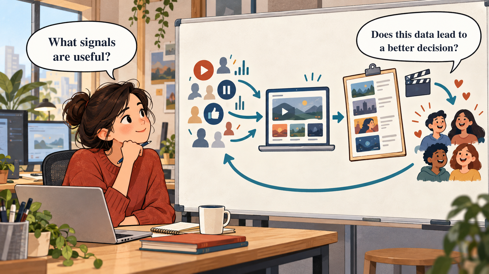

A platform gains value only when customer signals improve a real decision, customer experience, and business result.
Which customer signals reveal a real need?
Not every click is useful. We need signals with enough meaning and context to support a decision.
How can data improve the next action?
Data becomes valuable when it changes a recommendation, design choice, or investment and the result can be observed.

A recorded customer action that may help answer a business question: a save, a completed view, a search, or a repeat visit.
A suggested next product, item, or piece of content selected for a customer.
A repeated process in which an observed result improves the next decision.
The percentage of paying customers who cancel in a period. It helps show whether people stay.
A data point becomes useful only when it helps answer a business question and changes an action.
More data without a better decision is storage, not advantage.
A high number of clicks may mean interest, confusion, or a failed search. Start with the decision you want to improve, then choose the smallest useful signal.
A viewer finishes a cooking video, saves it, then searches for beginner recipes. The sequence suggests a need for a beginner cooking recommendation. Watch time alone would be weaker evidence.
A music app records: a two-second song opening, a saved song, and listening to an album twice.
Choose the strongest signal of preference. Explain why in one sentence.
Observe a relevant signal.
Ask what the signal may mean.
Change a recommendation or decision.
Check the customer outcome.
Keep, improve, or stop the action.
Viewers who finish a Korean thriller start similar titles. The service tests a recommendation row and observes whether those viewers watch suggested titles. It keeps or changes the row based on the result.
A campus events app sees that students save events but do not attend.
Complete: “The app should test ___ because saved events may mean ___. I would observe ___ to decide whether the test worked.”
Does this signal help the specific decision we need to make?
Could another explanation produce the same customer action?
Do customers understand and accept how the data is collected and used?
A viewer stops a video after ten seconds. This might show dislike. It could also mean a phone call, a slow connection, or a poor title preview. One event is not enough context.
A delivery app sees a customer close a restaurant menu.
Name one alternative explanation and one additional signal to check before changing the restaurant recommendation.
A streaming service improves recommendations and wants to know whether people stay.
Choose the best first metric: new sign-ups, churn rate, or office rent. Explain in one sentence.
Signal tells us something about a need.
Feedback loop changes the next action.
Quality and trust determine whether we can rely on it.
Economics shows whether the change creates value.
Netflix's paid memberships rose from 167.1 million in 2019 to 260.3 million in 2023. Content cash additions fell from $13,917M in 2019 to $13,063M in 2023. Operating income rose from $2,604M to $6,954M.
Which one observed change should a manager investigate first? What customer-behavior measure would you still need before claiming that a data feedback loop caused the financial outcome?
A student streaming platform can collect every click and sell detailed audience profiles, or ask permission for a smaller set of viewing, saving, and search signals to improve recommendations and content decisions.
Choose one approach or design a third approach.
1. My strategy is ... because ...
2. The signal and decision are ...
3. The greatest risk is ...
4. In 90 days, I would ...
5. I would change my decision if ...